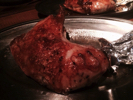
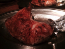
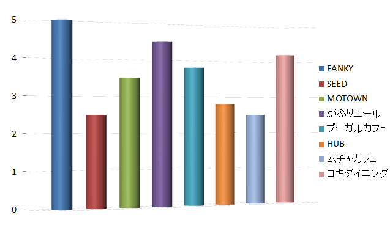

第一位！！！
第一位：FUNKY原田
予算2000円の中で一番満足が出来、評価も満点でした！
低価格でボリュームのある串焼き盛り合わせや、顔程の大きさがあるfunkyハイボールは是非一度体感してみてください！>
第二位！！！
第二位：がぶりエール
予算は若干超えたもののサイドメニューからメインまで幅広く楽しめたのが良かったです！
更にがぶりエールではオリジナルのビアカクテルが作れるので興味のある人は是非！
 

第三位！！!
第三位：ロキダイニング
低価格で食べ飲み放題が出来るといったお財布に優しいダイニングバーとなっています！しかし、料理、飲み物が届く時間が遅い事も・・・・
まとめ！！！
調査した全店舗のコストパフォーマンス別グラフ
